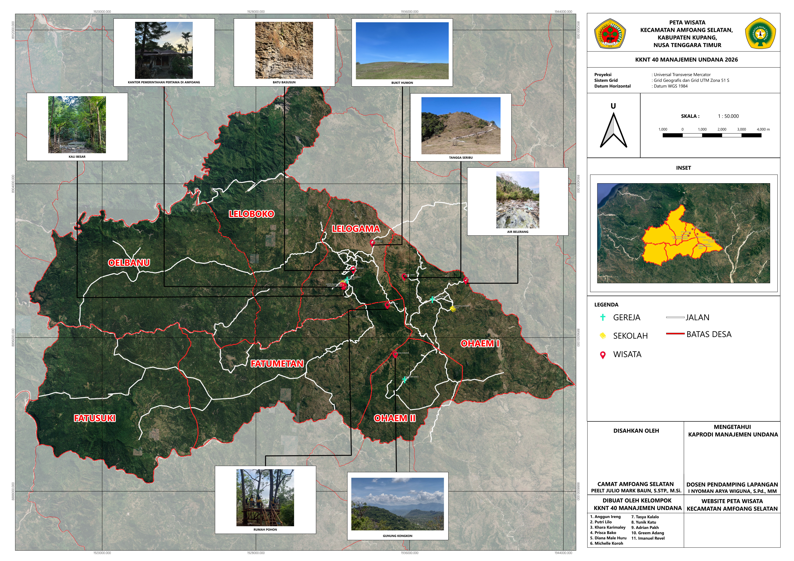

Peta Wisata Amfoang Selatan
PDF Versi 3Kecamatan Amfoang Selatan, Kabupaten Kupang, NTT
Kecamatan Amfoang Selatan, Kabupaten Kupang, NTT

Memuat Peta Amfoang Selatan 3...
Amfoang Selatan, Kab. Kupang

Mata air belerang alami di Amfoang Selatan dengan keindahan alam sekitarnya serta khasiat air hangat alami.

Panorama perbukitan savana nan hijau menakjubkan dengan pemandangan terbuka khas dataran tinggi Amfoang.

Jalur tangga panorama yang menawarkan pemandangan spektakuler perbukitan dan lanskap alam pegunungan.


Spot gardu pandang alami dengan latar belakang perbukitan hijau yang asri dan sejuk.